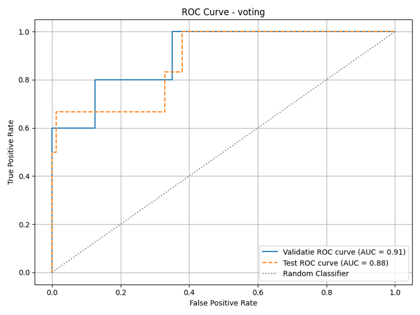

To predict contamination a voting classifier was choosen. This model uses an ensemble learning approach that combines the strengths of multiple classifiers to boost accuracy and robustness. The ensemble uses:
The total dataset contained 52 contaminated viruses and 798 non-contaminated viruses. This total dataset was divided into a train (80%), validation(10%) and test(10%) set. With a test set of 85, a validation set of 85 and a trainset of 680 viruses. In the trainset there are 41 contaminant viruses, in the test 6 and in the validation 5.
From the 10 models trained and tested this model had the best recall average of
contaminated and non-contaminated viruses in samples. With a recall of 81% while
the next best model (Random forest) had a recall average of 4% less and the
worst model (Complement naïve bayes) 22% less.
Statistics about the other models can be found in the research paper.
Read research paper
The confusion matrix in Figure 1 illustrates the number of true positives, true negatives, false positives, and false negatives predicted by the voting classifier. From this matrix, three key performance metrics were derived:
Together, these scores confirm that the voting classifier performs reliably across both contaminated and non-contaminated virus samples.
The ROC AUC score is a valuable metric to assess the classifier's ability to distinguish between contaminated and non-contaminated viruses across various thresholds. This model achieved an AUC of 0.89, indicating excellent discriminative performance. Figure 2 shows the ROC curve, where the closer the curve follows the top-left corner, the better the performance.
Figure 1: confusion matrix of test set voting classifier.
Figure 2: ROC curve of the voting classifier on the test set.